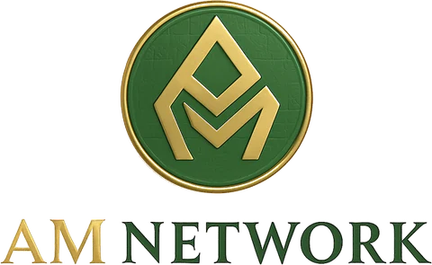

Version 1.1 replaces Version 1.0 (May 2026). See “What changed in v1.1” at the end.
amnetwork.io · contact@amnetwork.io
Zakat is the third pillar of Islam: 2.5% of qualifying wealth, owed every lunar year by each Muslim whose wealth exceeds the nisab. The World Bank and IRTI/IsDB estimate the annual Zakat obligation — what is owed, not what is collected — at $50–600 billion. Less than $25 billion of it moves through formal institutions. The rest is given in cash, through intermediaries, or not at all — and almost none of it can be traced by the person who gave it.
AM Network is building the infrastructure that lets a donor see their Zakat arrive: every recipient assessed by AI and confirmed in person by a trusted local verifier, every transfer recorded on a public blockchain, and 100% of the Zakat itself reaching the recipient.
AM Zakat.ai — the core platform. A 0–100 AI need score, human confirmation by a local oracle network (mosque imams, AM Network volunteers, partner charities), and escrow smart contracts on the Base blockchain that release funds only after two independent verifiers agree.
AM Academy — free, Sharia-compliant financial literacy. Live today: 5 modules, 20 lessons, every claim linked to a source, AI explanations, and a downloadable completion certificate. NFT certificates are planned.
We charge an ujrah (service fee) of 1–2.5%, paid on top of the Zakat — never deducted from it. No interest, no speculative token. If AM Network one day handled 1% of the Zakat potential ($0.5–6 billion a year), a 1.5% ujrah would mean $7.5–90 million in annual revenue. That is a long-term ceiling for context, not a forecast; our forecast is in Section 10.
Pre-launch. The website, the Zakat calculator, the AI scoring demo, AM Academy and a set of free Islamic tools are live (Section 6). Smart contracts are written and tested locally but are not on mainnet. We are seeking a Sharia advisory board and fatwa, a technical co-founder, and seed funding of $150,000–$500,000.
AM Network is not a charity. It is infrastructure: the rails on which transparent Islamic giving can move — verifiably and at global scale.
Recipients are registered under one of the eight Zakat categories (asnaf) named in the Quran (9:60). Within them, the scoring model weighs need across 15 groups:
Today the scoring quiz on amnetwork.io is a client-side demo of this model. The full scoring engine exists as a prototype and is not yet used for real payouts.
Base (Coinbase’s Ethereum Layer-2) is our primary chain: Ethereum security at fees of fractions of a cent, which makes small Zakat and Sadaqah payments viable. Solana is the backup for high-volume scenarios, and LayerZero is planned for moving assets between chains.
Two Solidity contracts are written and tested on a local EVM against OpenZeppelin v5 (29 of 29 checks pass): AMZakatPool for donations to a specific recipient and AMZakatPoolGeneral for the shared pool.
The contracts have an administrator role. It can pause the contracts in an emergency, manage oracles, adjust fee tiers within the 2.5% cap, and set the treasury. In production this role must be held by a multi-signature wallet, never a single key. We state this plainly because “no one can intervene” would not be true.
Before mainnet: a professional security audit, Sharia board sign-off on the fee mechanics, a multisig admin, and a testnet run on Base Sepolia with real oracle dry-runs. None of these is complete yet.
AM Network acts as an agent (wakil) delivering Zakat on the donor’s behalf, for a disclosed service fee (ujrah) agreed in advance. A fee for a legitimate service is not riba. Because the fee is charged on top of the Zakat, nothing is taken from the share owed to the poor.
We will not issue a speculative cryptocurrency token. Many scholars regard such tokens as impermissible because of gharar (excessive uncertainty) and elements resembling maysir (gambling). Value moves in stablecoins. Our revenue is the service fee, and our growth depends on volume, not token prices.
We are seeking a formal Sharia advisory board of recognized scholars in Islamic finance. A fatwa on our specific ujrah implementation is required before mainnet. We have contacted potential advisors; no one has yet confirmed, and we do not present anyone as an advisor until they have.
Our free tools do not issue religious rulings. Quran text, translations and recitations are shown live from Quran.com exactly as published; hadith come from an open dataset with sources; any AI translation is labelled as such.
Everything below is publicly available on amnetwork.io in 10 languages (English, Russian, Tajik, Arabic, Indonesian, Turkish, Chinese, Malay, French, German), with light and dark modes, and installable as an app (PWA).
| Product / tool | Status |
|---|---|
| Zakat calculator | LIVE159 countries, nisab, multiple asset types |
| AI scoring demo | LIVE6-step quiz, score 0–100, runs in the browser |
| Assistance application | LIVE5-step form, delivered securely by email |
| AM Academy | LIVE5 modules, 20 lessons, sources, completion certificate (en/ru/ar content) |
| The Noble Quran | LIVE114 surahs from Quran.com, certified translations, recitations, word-by-word, Mushaf view, offline saving |
| Hadith collection | LIVEBukhari, Muslim, Tirmidhi by chapter |
| Dua & Dhikr, Tasbeeh | LIVEwith hadith citations |
| Prayer times, Qibla, Islamic calendar | LIVEincl. a daily prayer tracker and Friday reminder |
| Waitlist | LIVEopen at amnetwork.io |
| Smart contracts | PROTOTYPEtested locally, not on mainnet |
| Recipient payouts, oracle network | PLANNEDafter audit, fatwa and legal registration |
| AM Pay, AM Waqf | PLANNED |
The free tools serve Muslims daily, at no cost, without a token or a sign-up. They build the trust and the audience that the Zakat platform will need at launch.
Islamic finance held about $6 trillion in assets in 2024 and is growing around 12% a year. Islamic fintech is expected to reach $341 billion in transaction volume by 2029. Zakat alone is owed in the range of $50–600 billion a year, of which less than $25 billion is handled formally. This gap is the market we serve.
Updated October 2026. Dates after Phase 2 depend on the audit, the fatwa and legal registration, so we do not promise them.
Economist (Plekhanov Russian University of Economics, Moscow) and diplomat with a background in international relations. Building AM Network to bring transparency and justice to Islamic giving.
Interested? team@amnetwork.io
We have approached Sharia advisors, development banks and accelerators. None has confirmed a partnership, and we do not list any organization as a partner until it has. Technology names on our site (Base, Solana, LayerZero, OpenZeppelin) describe the stack we use, not partnerships.
Counted from mainnet launch, not calendar years: the launch date depends on the audit and fatwa. Volumes are the founder’s planning targets, not results.
| Period | Zakat volume | Avg ujrah | Revenue | Share of Zakat potential |
|---|---|---|---|---|
| Testnet beta | $0 (no real funds) | — | $0 | — |
| Year 1 | $10M | 1.75% | $175K | 0.002–0.02% |
| Year 2 | $50M | 1.5% | $750K | 0.008–0.1% |
| Year 3 | $200M | 1.5% | $3M | 0.03–0.4% |
| Year 4 | $1B | 1.25% | $12.5M | 0.17–2% |
Even in Year 4 the plan assumes a small share of annual Zakat potential. Target: profitability in Year 3.
| Item | Amount |
|---|---|
| Technical development (CTO equity + smart contracts) | $120,000 |
| Security audit of smart contracts | $40,000 |
| Marketing and community | $50,000 |
| Operations (12 months) | $40,000 |
| Sharia certification | $30,000 |
| Legal registration (UAE ADGM or Malaysia Labuan) | $20,000 |
Layer-2 networks such as Base settle payments for fractions of a cent. Stablecoins make on-chain value predictable. AI can help assess documents at scale, with humans confirming the result.
Islamic fintech is projected to reach $341 billion by 2029. The UAE, Malaysia and Saudi Arabia are actively building frameworks for Sharia-compliant digital finance.
A generation of digitally native Muslim donors expects to see where their money goes. They will give through platforms that show receipts.
| Risk | Level | Mitigation |
|---|---|---|
| Sharia non-compliance ruling | High | Formal fatwa before mainnet; ujrah on top of Zakat; no speculative token |
| No technical co-founder yet | High | Active recruitment; equity offered; accelerator applications |
| Regulation of crypto payments | Med | ADGM or Labuan registration; compliance first; fiat on-ramp |
| Document fraud at scale | Med | Two-oracle confirmation; oracle stakes and slashing; public audit trail |
| Smart contract vulnerability | Med | Professional audit before mainnet; multisig admin; emergency pause; bug bounty |
| Admin key misuse | Med | Multisig only; fee hard-capped at 2.5% in code; donor-side fee limit |
| Low donor adoption | Med | Free tools build the audience now; mosque and community partnerships |
AM Network is a technology platform, not a bank, financial institution or asset manager. It does not take deposits or invest user funds. No real funds are processed today.
Roadmap dates, user numbers and financial projections are plans and targets, not guarantees or results.
Investing in a pre-seed company carries significant risk, including the loss of the entire investment. There is no guarantee of profit or return.
The treatment of blockchain-based payments differs between jurisdictions. Users are responsible for complying with the laws that apply to them. AM Network does not give legal advice.
AM Network is designed to follow Islamic finance principles, but it has not yet received a formal fatwa. Users are encouraged to do their own due diligence and consult qualified scholars.
Zakat potential: World Bank & IRTI/IsDB, “Global Report on Islamic Finance” (2016). Muslim population: Pew Research Center. Islamic finance assets: LSEG/ICD Islamic Finance Development Report 2025. Islamic fintech: Global Islamic Fintech (GIFT) Report 2025/26, Qatar Financial Centre.
Zakat transparency is an old problem. What is new is that the tools to solve it — public blockchains, low-cost programmable money and AI at scale — now exist and are accessible. AM Network is where religious duty meets that technology. We invite you to be part of it.